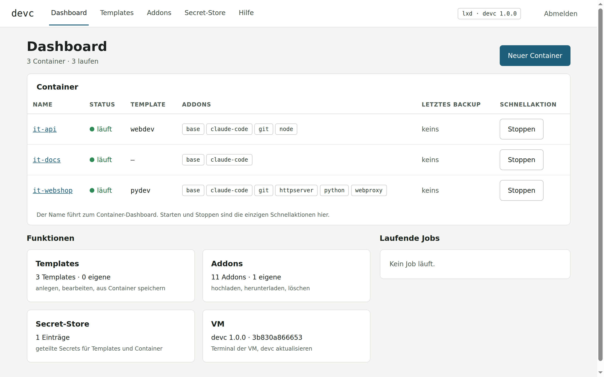
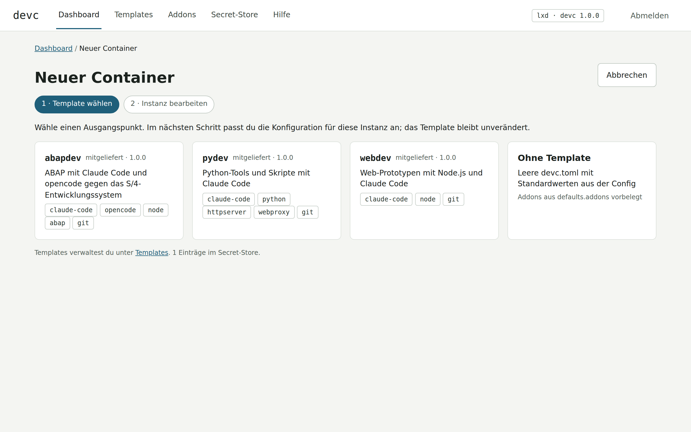
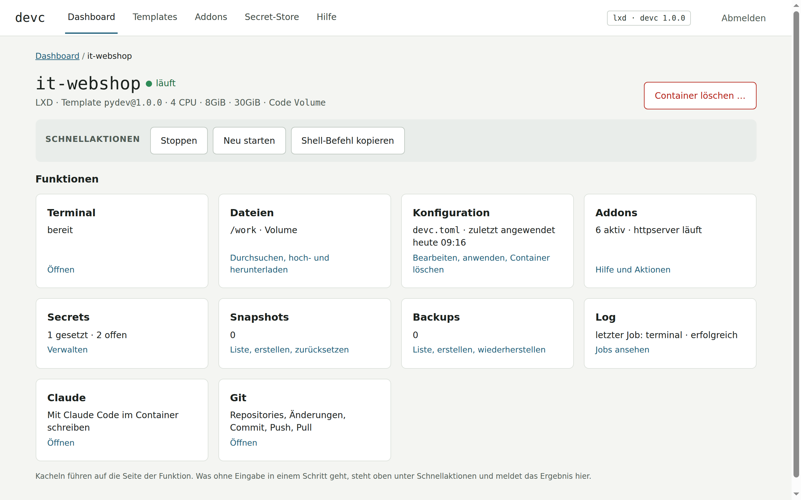
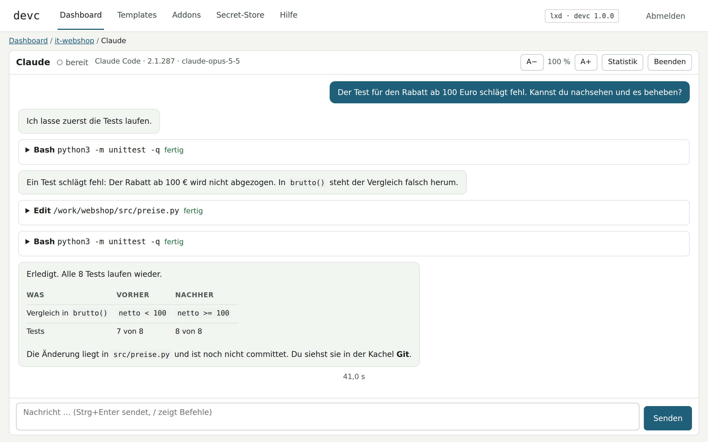
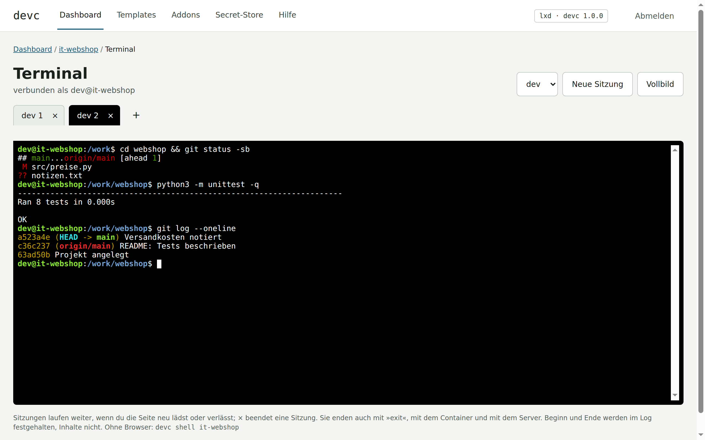
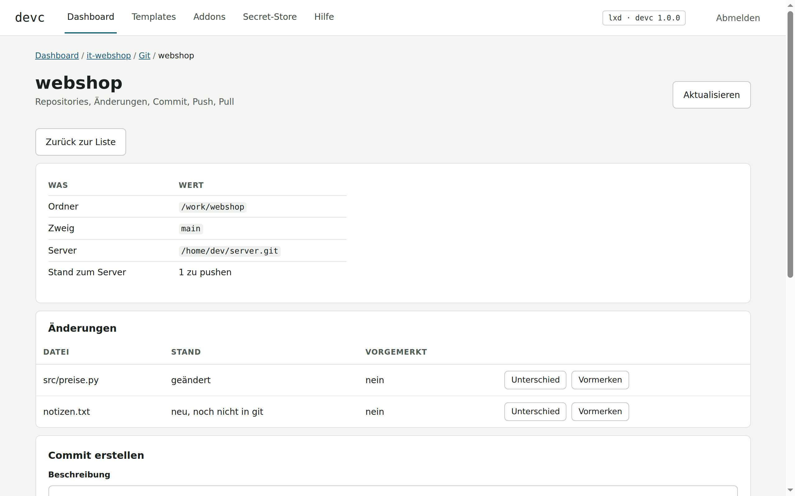
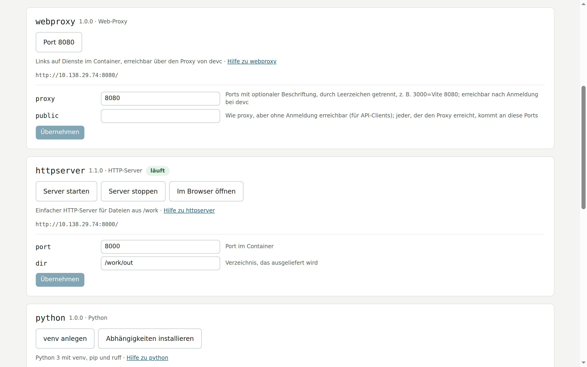

Ein Klick, und Claude Code hat eine eigene, abgeschlossene Arbeitsumgebung. Bedient wird alles im Browser.
Container in LXD · Web-Oberfläche und Kommandozeile · Addons




dev oder root.devc shell <name>.

httpserver zeigt einen Ordner im Browser. webproxy macht eigene Dienste erreichbar.
README.md und docs/HILFE.md im Repository.# Vorlagen ansehen devc template list # Container anlegen devc create py-tools --template pydev # Shell im Container devc shell py-tools10